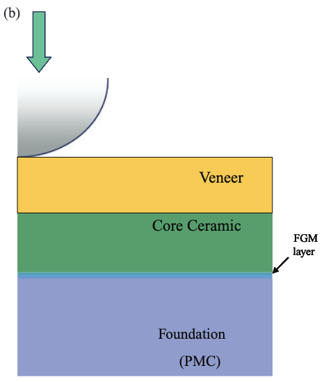
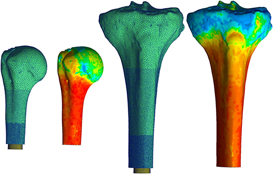

Dental Materials
Bio-Inspired Functionally Graded Materials in Dental Composites
Mimicking the natural dentino-enamel junction to reduce failure in dental implants using finite element optimization.
Exploring the intersection of mechanics, materials, biomechanics, and machine learning.

Dental Materials
Mimicking the natural dentino-enamel junction to reduce failure in dental implants using finite element optimization.

Biomechanics & Machine Learning
Investigating stress fractures in the tibia by combining imaging techniques, finite element analysis, and machine learning algorithms to develop a predictive tool for clinical applications.